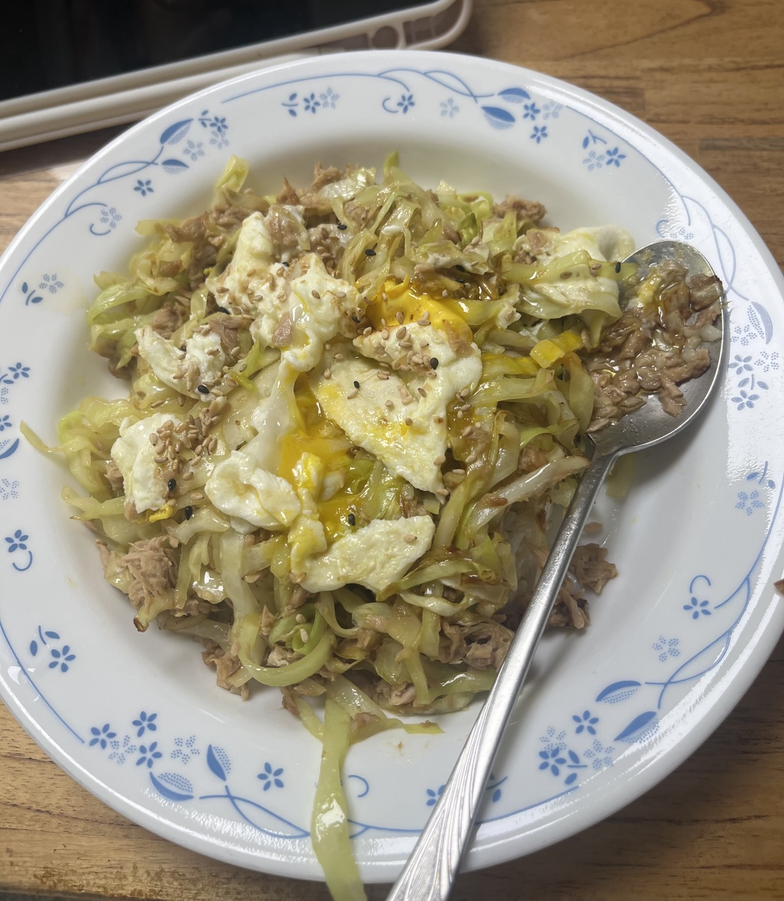

🍽️양배추참치덮밥 레시피🍽️
한 달에
5kg
빠지는 양참덮 레시피 가보자고🤤
⬇️⬇️

ㄴ접시는 무시해주세요...😇
재료
양배추 세 주먹
참치 한 캔
현미밥 100g
참치액
굴소스
계란 1개
참기름(선택)
참깨(선택)
레시피
팬에 올리브유 두르고, 중불에 양배추 세 주먹 투하!
참치액 반 스푼, 굴소스 1/3 스푼 넣고 볶볶🥄
양배추가 투명해지면 기름 뺀 참치 한 캔 투하!
중간에 자리 만들어 계란 톡 까주고🍳
노른자 익으면 따땃한 현미밥 100g 위에 올려주기!
참기름, 참깨까지 있으면 극락😇
사실 이거 보고 만든거예요😋
양참덮은 제가 인생에서 처음으로
"요리"
해먹은 음식이랍니다...!
그만큼 쉽고 맛있으니 다들 츄라이츄라이😊
살은 안 빠지더라...